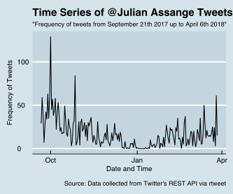
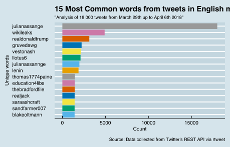
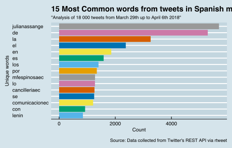

The following presents a language analysis of 3200 tweets sent over the past six months since September 21st 2017 until April 6th 2018 from @JulianAssange. The starting and ending dates of this data frame have relevant importance. In late September 2017, Assange emerged as one of the loudest voices on Twitter amplifying news and commentaries about Catalonia’s secession referendum. One month later, Ecuador’s foreign ministry warned Assange over Catalonia comments. Yet his communiques kept interfering in the affairs of other states and consequently risking the international relations that the newly elected government seems to restore. Recently, as of March 27th 2018, Assange has been barred from using the internet at the Ecuadorian Embassy in London.
An analysis of 3,200 tweets sent by Julian Assange over the past six months.
As April 6th 2018 Julian’s Assange’s Twitter account (@JulianAssange) recorded 5.484 twetets, 779 mil followers, and only 26 friends he follows. His first joined the network October 2011. His Twitter’s account description reads: “Publisher @WikiLeaks; I open governments. Arbitrarily detained in violation of UN ruling WGAD/54/2015. Unless otherwise stated positions are my own”. The data clearly shows a rise in late October at the moment that Catalonia Independence was a hot topic. Later it decreased slowly until November when it was the first time the internet was turned off in the Ecuadorian Embassy. However, in that occasion it lasted only a day or two. The plot clearly shows a dramatically decrease in the amount of tweets from that point of time to slowly arising from mid-January once again. It also shall be mention that the small spike seen in late December represents the time when Assange was granted Ecuadorian citizenship. Finally, the line finishes right before the month of April, specifically on March 27th 2018, when Assange has been barred from using the internet at the Ecuadorian Embassy in London.
It is interesting to notice that @JulianAssange has only a total of 5490 tweets since he joined the network back in October 2011. The text has been written in different languages mainly in English, Swedish and Spanish. The most common words stated refer to Calatonia Independence, the WikiLeaks and United Kingdom. There are some Spanish prepositions as well which could not been taken away during the language analysis despite applying the stop_words function.
The bar chart above represents a binary distinction between positive and negative sentiments using the ‘bing’ list from the {tidytext} package. The bars above cero shows the positive words with a total of only 1207 out of 3289 words. Whereas the negative sentiment was reflected with 2182 words, almost two times more than the positive ones.
As it can be seen in the charts words like fake, propaganda, attacks, conspiracy, prison and repression were constantly spotted in the tweets of Assange. However, it is quite interesting to see how Trump has been leading the category as a word associated with positivism.
Adding some transformations to the data set allowed to create a word cloud where the darker words represent the negative sentiment and the light colour ones the positivist ones. The word cloud was set with a minimum of 100 times of repetition for each word.
This plot resembles an overall result of the emotions in the tweets. It shows how the vast majority is associated with negative sentiments.

The graph displays each one of the ten sentiments analysed in the data set in terms of frequency.
An analysis of 18000 mentions of @JulianAssange over the past 9 days.
The data frame was scrapped at the eleventh day of Assange being off-line. During this time a significant and consistent criticism against the Ecuadorian government has raised across the globe. As a complement to this study case, a language analysis has also been applied to the most recent 18000 mentions of @JulianAssange from March 29th up to April 6th 2018, in English and Spanish language, respectively.
The graph displays each one of the ten sentiments analysed in the data set in terms of frequency.
The graph displays each one of the ten sentiments analysed in the data set in terms of frequency.
When looking into the tweets mentioning @JulianAssange it is interesting to see that the the wording changes significantly depending on the language. For instance, in the English written tweets @RealDonaldTrump leads the third place as one of the most mention words. In addition, the account of the Ecuadorian President @lenin occupies the eighth position out of 15th. On the other hand, in the Spanish written tweets @lenin lays on the last position of the most common words and the account of the foreign minister @mfespinosaec has many more mentions as well as the international embassy @cancilleriaec.